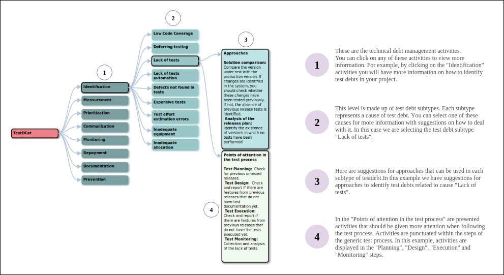

The TestDCat catalog consists of TD management activities and, for each of them, a set of subtypes of test debts are associated. Within each of these subtypes, actions are presented using the 5W1H (Who, What, When, Where, Why, and How) model. These actions can be added to a custom action plan. TestDCat was developed based on semi-structured interviews conducted with professionals who perform testing activities on eight industry projects. With our catalog, we intend to assist professionals and researchers in managing test debts during the execution of software testing activities.
Catalog
TestDCat follows a mind map structure. The figure below shows an example of how to use the catalog to help in the test debt management.

Using this form, you can propose improvements to this catalog. The proposed new actions will be reviewed by a technical
team before their inclusion. You can reply here or, if you prefer, you can go to the form page by clicking on the button below.